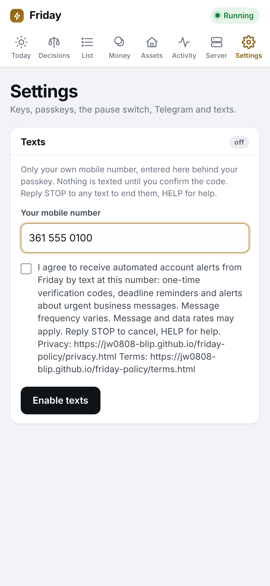
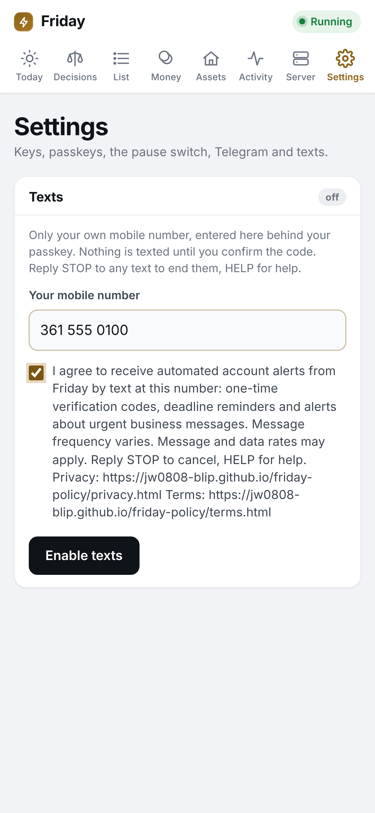

Friday SMS consent evidence
Friday is a business assistant software application operated by Jerad Watson, sole proprietor. It sends automated account alerts by text. End users opt in inside the Friday application after signing in. The application requires a login, so screenshots of the full consent screen are hosted on this page for carrier review.
The consent screen (Friday app, Settings, Texts)


The opt-in steps
- The end user signs in to the Friday application and opens Settings, Texts.
- The end user enters a mobile number and ticks the optional checkbox, which reads:
I agree to receive automated account alerts from Friday by text at this number: one-time verification codes, deadline reminders and alerts about urgent business messages. Message frequency varies. Message and data rates may apply. Reply STOP to cancel, HELP for help. Privacy: https://jw0808-blip.github.io/friday-policy/privacy.html Terms: https://jw0808-blip.github.io/friday-policy/terms.html
- The end user taps Enable texts. Friday sends one text:
Friday: your verification code is [6-digit code]. Enter it on the Texting screen in the Friday app to confirm this number. Reply STOP to cancel, HELP for help.
- Texting turns on only after the end user enters that code in the app. The Texts card then shows the number, the date texts began, and a Turn texts off button.
This is the only opt-in method. There is no keyword opt-in and no public sign-up form.
Messages, frequency, opt-out
Automated account alerts generated by the application: one-time verification codes, reminders when a tracked business deadline is near, and alerts when urgent business email or account activity needs attention. Message frequency varies, typically one to a few per day. Message and data rates may apply. Reply STOP to any message to cancel, HELP for help. No marketing.